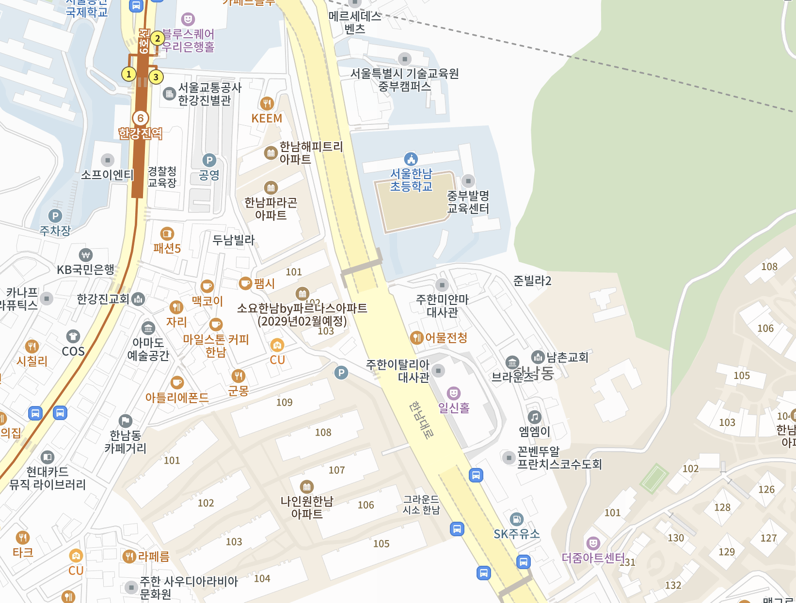

어드민에서 골라 쌓아 상세 페이지를 조립하는 블록입니다. 제품 화면에는 아직 붙이지 않았습니다 — 여기는 재료만 둡니다. 기준 폭은 Figma 와 같은 Desktop 750 · Mobile 390 이고, PC 상세 콘텐츠 영역은 최대 852 까지 넓어집니다. 콘텐츠는 PC·모바일 공통으로 한 번만 등록하고 폰트·여백·배치만 기기별로 바뀝니다.
.tpl-title라벨(옵션) + 타이틀. 타이틀은 최대 2줄이고 넘으면 잘립니다.
라벨 텍스트 (옵션)
라벨 텍스트 (옵션)
.tpl-text머리 + 본문 문단. 머리는 통째로 생략할 수 있고, 머리가 있으면 타이틀은 필수입니다. 번호 · 메타 · 별점은 각각 선택이며 데스크톱·모바일 모두 씁니다.
타이틀 입력
감정적인 오렌지들은 이용자들의 안전과 신뢰를 가장 우선으로 여겨요. 정식 결혼정보회사 등록 법인 운영으로 보증보험 5억, 공중파 다수 출연 등 안전하고 투명하게 운영하기 위해 최선을 다하고 있어요.
물론, 로펌도 함께합니다. 가장 중요한 신원, 직업 및 혼인 상태 허위 기재 등 중대한 위반 행위를 방지하기 위해 공식 법률 자문 파트너 클로저와 협약을 체결하여 회원보호정책 및 대응체계를 운영하고 있어요.
타이틀 입력
감정적인 오렌지들은 이용자들의 안전과 신뢰를 가장 우선으로 여겨요. 정식 결혼정보회사 등록 법인 운영으로 보증보험 5억, 공중파 다수 출연 등 안전하고 투명하게 운영하기 위해 최선을 다하고 있어요.
물론, 로펌도 함께합니다. 가장 중요한 신원, 직업 및 혼인 상태 허위 기재 등 중대한 위반 행위를 방지하기 위해 공식 법률 자문 파트너 클로저와 협약을 체결하여 회원보호정책 및 대응체계를 운영하고 있어요.
머리는 통째로 생략할 수 있고, 머리가 있으면 타이틀은 필수입니다. 번호(index) · 메타(meta) · 별점(rating)은 각각 선택이며 데스크톱·모바일 모두 씁니다. 항목을 가르는 점은 CSS 가 놓습니다 — 무엇을 켜고 끄든 개수와 자리가 저절로 맞습니다. 번호에는 점이 붙지 않습니다.
삼성 디스플레이 연구원
진행이 매끄러워서 처음인데도 어색하지 않았어요. 자리배치가 좋았습니다.
삼성 디스플레이 연구원
진행이 매끄러워서 처음인데도 어색하지 않았어요. 자리배치가 좋았습니다.
04
서로에 대한 설레는 쪽지교환
10분 대화가 종료될 때마다 상대 이성의 마음 쪽지를 받아요. 어디서도 들을 수 없던 소개팅 상대들의 속마음을 확인하고 평생 도움되는 연애 꿀팁으로 나도 몰랐던 나의 매력을 발굴하고 업그레이드 할 수 있는 기회가 됩니다.
04
서로에 대한 설레는 쪽지교환
10분 대화가 종료될 때마다 상대 이성의 마음 쪽지를 받아요. 어디서도 들을 수 없던 소개팅 상대들의 속마음을 확인하고 평생 도움되는 연애 꿀팁으로 나도 몰랐던 나의 매력을 발굴하고 업그레이드 할 수 있는 기회가 됩니다.
.tpl-list타이틀(옵션) + 글머리 기호 목록. 글자는 본문과 같고 들여쓰기만 다릅니다.
필수 유의사항
필수 유의사항
.tpl-spacer
섹션을 끊는 자리에 넣는 빈 블록입니다. 크기는 셋 중에서 고릅니다 —
--s · 기본 · --l(데스크톱 40 · 80 · 120, 모바일 24 · 40 · 60).
블록마다 여백을 여는 대신 이것을 둔 것은, 운영이 "얼마나 띄울지"가 아니라 "여기서
끊는다"를 고르게 하려는 것입니다. 앞뒤 블록이 이미 가진 여백에 더해집니다.
앞 섹션
여기까지가 한 섹션입니다.
작은 스페이서(--s) 뒤.
기본 스페이서 뒤.
뒤 섹션
스페이서가 둘 사이를 끊습니다.
앞 섹션
여기까지가 한 섹션입니다.
작은 스페이서(--s) 뒤.
기본 스페이서 뒤.
뒤 섹션
스페이서가 둘 사이를 끊습니다.
.tpl-image-full컨테이너 너비 100%, 높이는 원본 비율. 750×480 원본이면 PC 852×545 · 모바일 350×224. 고해상도 대응을 위해 업로드 이미지는 가로 1704px 이상을 권합니다.
.tpl-image-solid
단색 배경은 코드가 만들고 그 위에 이미지·로고·일러스트만 올립니다. 배경색과 문구색
모두 Hex 로 지정합니다 — 어드민 값이 style="--tpl-solid-bg:#151D34; --tpl-solid-fg:#A8978D"
로 들어옵니다. 지정하지 않으면 #151D34 · #A8978D 입니다. 안쪽
이미지는 비율을 지킨 채 자리를 채우고(fit), 하단 문구는 선택이라 미입력이면 이미지만
나옵니다. 둘 다 어드민 값이라 대비는 입력 단계에서 확인해야 합니다.
어드민이 넣을 값입니다 — style="--tpl-solid-bg: … ; --tpl-solid-fg: …"
허위정보 로펌 협업 · 보증보험 5억 +
허위정보 로펌 협업 · 보증보험 5억 +
.tpl-carousel-images최소 3장, 최대 10장 권장. PC 2개 · 모바일 1개와 다음 것 일부가 보입니다. 이미지마다 대체 텍스트를 함께 등록합니다. 한 장뿐이면 캐러셀을 걷어내고 Full Image 처럼 나옵니다(blocks.js).


.tpl-carousel-products
최소 3개. 어드민은 상품만 고르고, 상품명·이미지·가격·일정·잔여석은 상품 데이터가
채웁니다(디자인 시스템의 .product-card 를 그대로 씁니다). 노출 종료·판매
중지 상품은 자동 제외되고, 하나만 남으면 넘기는 UI 를 숨기며, 하나도 없으면 블록 전체를
숨깁니다.


.tpl-location
등록된 좌표에 핀 하나. 높이는 PC 360 · 모바일 240 이고 폭만 컨테이너를 따릅니다 —
PC 는 콘텐츠 영역 최대 852, 모바일은 화면 너비 100%. 주차 안내처럼 덧붙는 설명은 아래
Text 블록, CTA 는 Button 블록입니다.
지도 있음은 시안의 지도 그림입니다 — 실제로는 네이버 지도 API 가 그 자리를
채웁니다. 지도 없음은 지도가 오지 않았을 때로, 자리는 그대로 두고 한 줄만 남습니다 —
장소명 · 주소는 아래 Text 블록, 바깥 지도 링크는 Button 블록이 이미 갖고 있어 여기서
되풀이하지 않습니다. 그래서 Location 은 그 둘과 함께 쓰는 것이 기본입니다.


키가 없으면 지도 없음 안내 한 줄만 남습니다.
지도를 불러오지 못했습니다
주차 정보
건물 지하 주차장을 2시간 무료로 이용하실 수 있어요. 만차인 경우 도보 3분 거리의 공영 주차장을 안내해 드립니다.
지도를 불러오지 못했습니다
주차 정보
건물 지하 주차장을 2시간 무료로 이용하실 수 있어요. 만차인 경우 도보 3분 거리의 공영 주차장을 안내해 드립니다.
.tpl-button어드민이 정하는 것은 문구와 연결 동작(내부 페이지 · 외부 링크 · 지도 · 새창 여부) 뿐입니다. 높이와 스타일은 커스텀할 수 없고 PC·모바일 모두 컨테이너 너비를 채웁니다. 링크가 없으면 저장·노출되지 않습니다.
.tpl-coupon
어드민은 쿠폰만 고릅니다. 쿠폰명 · 할인율 · 발급 기간 · 사용 조건은 쿠폰 데이터가
채우고, 누르면 발급됩니다. 더 이상 받을 수 없으면 .tpl-coupon--closed 로
바뀝니다 — 이미 받았거나(받기 완료), 발급 기간이 끝났거나 다 소진되었거나(발급 종료).
둘은 모습이 같고 오른쪽 글만 다릅니다. 로그인하지 않은 사용자는 로그인 뒤 원래 화면으로
돌아옵니다. 상품에 적용할 수 없는 쿠폰은 노출하지 않고, 받을 수 있는 쿠폰이 없으면 블록
전체를 숨깁니다.
.tpl-accordion질문 하나가 블록 하나입니다. 여러 개를 이어 붙이면 목록이 됩니다. 열린 질문은 브랜드색이 되고 +가 −로 바뀝니다.
일반 소개팅은 7개 연령 그룹, 블랙 멤버 전용 소개팅은 5개 연령 그룹, 돌싱 소개팅은 5개 연령 및 자녀 유무 그룹으로 참여 연령이 분류되어있어요. 나의 나이와 상황에 맞는 이성을 편하게 만날 수 있으니, 걱정하지 마세요.
참여자 명단은 공개하지 않지만, 아는 사람이 걱정된다면 참여 회차를 바꿔 드려요.
일반 소개팅은 7개 연령 그룹, 블랙 멤버 전용 소개팅은 5개 연령 그룹, 돌싱 소개팅은 5개 연령 및 자녀 유무 그룹으로 참여 연령이 분류되어있어요. 나의 나이와 상황에 맞는 이성을 편하게 만날 수 있으니, 걱정하지 마세요.
참여자 명단은 공개하지 않지만, 아는 사람이 걱정된다면 참여 회차를 바꿔 드려요.